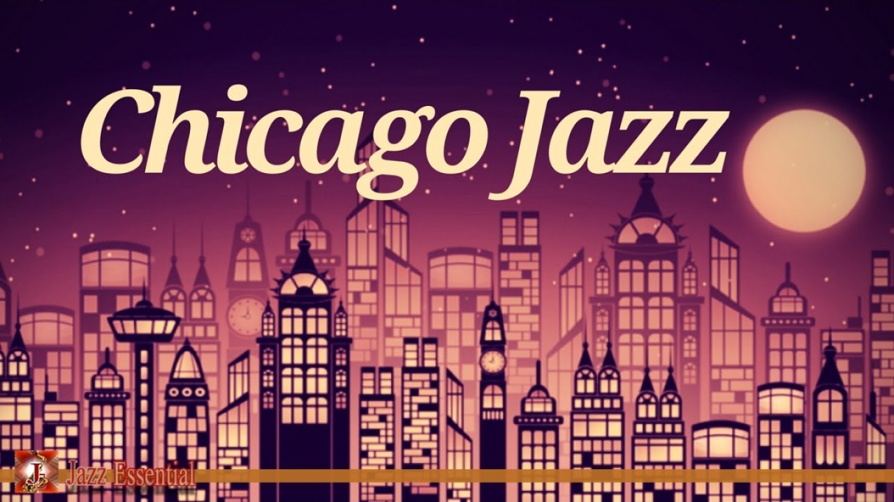

Chicago, Illinois is a major center for music in the midwestern United States where distinctive forms of blues (greatly responsible for the future creation of rock and roll), and house music, a genre of electronic dance music, were developed.
The distinctive "Chicago style" of jazz originated in southern musicians moving Northafter 1917, bringing with them the New Orleans "Dixieland" or sometimes called "hot jazz" styles.[4] King Oliver and Jelly Roll Morton became stars of the Chicago jazz scene. Louis Armstrong's recordings with his Chicago-based Louis Armstrong and his Hot Five and Hot Seven band came out in the years 1925 to 1928. These recordings marked the transition of original New Orleans jazz to a more sophisticated type of American improvised music with more emphasis on solo choruses instead of just little solo breaks. This style of playing was adopted by white musicians who favored meters of 2 instead of 4.[5] Emphasis on solos, faster tempos, string bass and guitar (replacing the traditional tuba and banjo) and saxophones also distinguish Chicago-style playing from New Orleans style.When Chicago musicians started playing 4 beat measures, they laid the foundation for the swing era. The Lindy Hop was originally danced to 4 beat Chicago style jazz and went on to become one of the iconic features of the swing era.